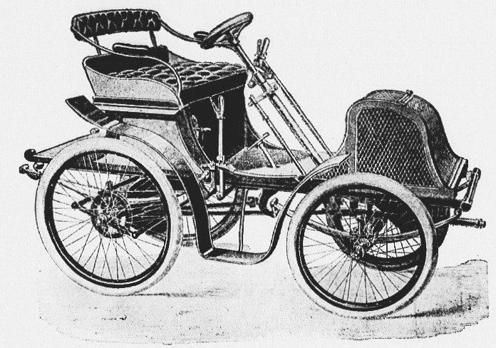

Voiturette
Фото

Краткая инфо
Voiturette (в переводе с французского — «повозка» или «тележка») — первый автомобиль компании
Renault, который собрал Луи Рено в 1898 году.
История
Voiturette был впервые зарегистрирован Леоном Болле в 1895 году как название его нового
моторного трицикла. Этот термин стал настолько популярным в первые годы развития
автомобильной промышленности, что многие производители использовали его для обозначения
своих небольших автомобилей. Слово происходит от французского слова, означающего
"автомобиль", voiture. В период между Первой мировой войной и Второй мировой войной лёгкие
гоночные автомобили с двигателями объёмом до 1500 куб. см, такие как Alfa Romeo 158/159
Alfetta, Bugatti Type 13 и оригинальные ERA, были известны как voiturettes.
Во Франции после Второй мировой войны выпускались небольшие трёхколёсные транспортные
средства — voiturette.
В 1990-х годах во Франции словом voiturette стали обозначать транспортные средства весом
менее 350 килограммов (770 фунтов) без груза и с грузом (т. е. пассажирами) весом не более
200 килограммов (~440 фунтов). Максимальная скорость ограничена 46 км/ч (~30 миль в час), а
объём двигателя — 50 куб. см или 4 киловаттами для двигателя «другого типа», например для
электромобиля.
Такие транспортные средства иногда также называют «моторными квадрициклами» или «моторными
трициклами». Водительские права для управления ими выдаются лицам старше 16 лет и относятся
к категории «B1». Они действительны с учётом ограничений во всех странах Европейского союза.
Конструкция
Некоторые особенности конструкции этой модели:
Двигатель использовали одноцилиндровый, мощностью 1,75 л. с., позднее — 2,25 л. с., а также
аналогичный, но производства фирмы Ateliers de Construction Mécanique l’Aster, мощностью 3,5 л.
Бак-карбюратор испарительного типа заменили отдельным бачком для бензина и масла в паре с
распылительным карбюратором Longuemare.
Передняя моторная ось соединялась с рамой задней части шкворнем.
Поворот всей передней части осуществлялся рычагом, на котором размещалось управление функциями
механизма.

Ещё есть информация о конструкции автомобиля L&K Voiturette A:
Рама была лестничного типа, имелись два жёстких (неразрезных) моста с рессорной подвеской.
Двигатель V2 с углом развала 55° и жидкостным охлаждением размещался спереди, имел рабочий объём
1 005 см³ и развивал мощность 7 л.
Коническое сцепление передавало крутящий момент к коробке передач.
Стандартно задние колёса приводились в движение через карданную передачу, но по заказу был
доступен и цепной привод.
Двойная тормозная система. Педаль воздействовала на трансмиссионный тормоз (барабанный, он стоял
за коробкой передач), а рычаг приводил в действие тормоза, тоже барабанные, на задней оси.
Эксплуатация
L&K Voiturette A был официально одобрен для дорог общего пользования к 18 января 1906 года.
Автомобиль имел двойную тормозную систему: педаль воздействовала на трансмиссионный тормоз
(барабанный, стоял за коробкой передач), а рычаг приводил в действие тормоза (тоже барабанные)
на задней оси.
Voiturette Type B от Renault был оснащён системой, которая позволяла водителю и пассажиру
управлять автомобилем круглый год, не беспокоясь о холоде или дожде. Объём двигателя этой модели
увеличился с 273 куб. см до 450 куб. см, что повысило мощность до 2,75 лошадиных сил. Подвеска
была улучшена, а максимальная скорость автомобиля составляла теперь 35 км/ч.
В 1990-х годах во Франции под Voiturette понимали автомобиль, который в пустом состоянии весил
менее 350 кг, а с нагрузкой (пассажирами) — не более 200 кг. Максимальная скорость такого
транспортного средства ограничивалась 45 км/ч, а объём двигателя — 50 куб. см или 4 киловаттами
(для другого типа двигателя, например электрического).
Модель я не нашёл простите :(
Остались вопросы, или Хотите чтото добавить пишите на